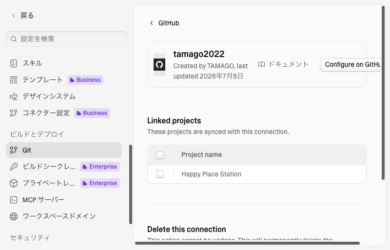
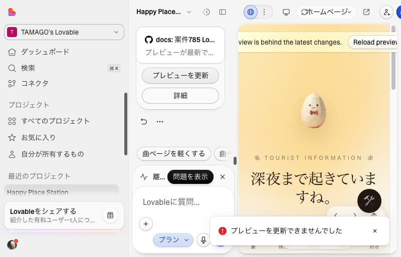

共有資料の一覧 ／ 確認ページ #785 案件785：Lovable「再接続」ボタンは存在しないと確認・本番は依然停止中
#785 案件785：Lovable「再接続」ボタンは存在しないと確認・本番は依然停止中
2026-09-13 実装・main合流・本番(GitHub Pages)反映まで実測確認
GitHub連携の設定画面(Connectors→Admin settings→Git→GitHub→接続詳細)へ実際に到達した。結果、依頼にあった「再接続」ボタンはLovableのUIに存在しない（あるのは外部github.comを開くリンクと、唯一の接続を切る破壊的な削除ボタンのみ）。接続情報自体は正常表示。非破壊の「プレビューを更新」も試したが、明示的な赤いエラーで失敗した。原因はGitHub連携ではなくLovable自体のビルド/デプロイ基盤が止まっていること。本番はまだ復旧していない。
② 数字
6回同一結論に達した独立セッション数
0個実在した「再接続」ボタンの数
5日以上本番が止まっている期間(09-07夜〜)
③ 実データでのスクリーンショット
GitHub接続詳細画面。再接続ボタンは無い
settings/git/github/connection画面
プレビュー再ビルドの結果
赤いエラートースト「プレビューを更新できませんでした」
④ 押せるリンク
⑤ 何をどう確かめたか
| 確認項目 | 結果 |
|---|
| GitHub連携画面へ到達 | 到達した(証拠画像あり) |
| 「再接続」ボタンの有無 | 存在しない(Configure on GitHub / Delete のみ) |
| 非破壊の再ビルド(プレビューを更新) | 明示エラーで失敗 |
| 本番デプロイIDの変化 | 変化なし(00:07時点) |